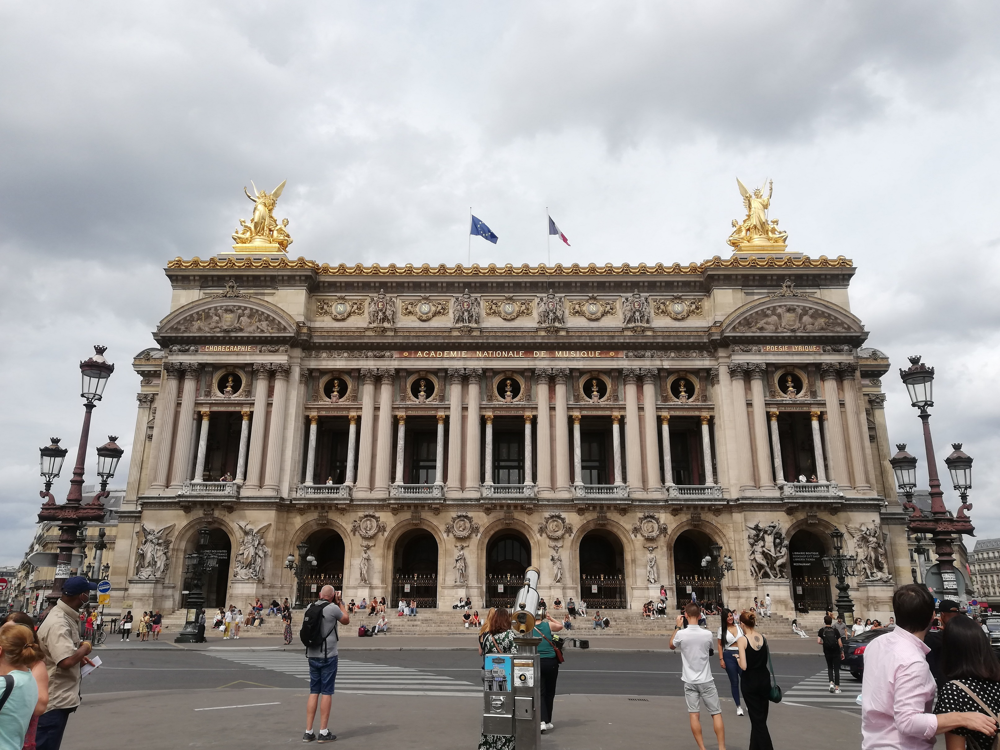
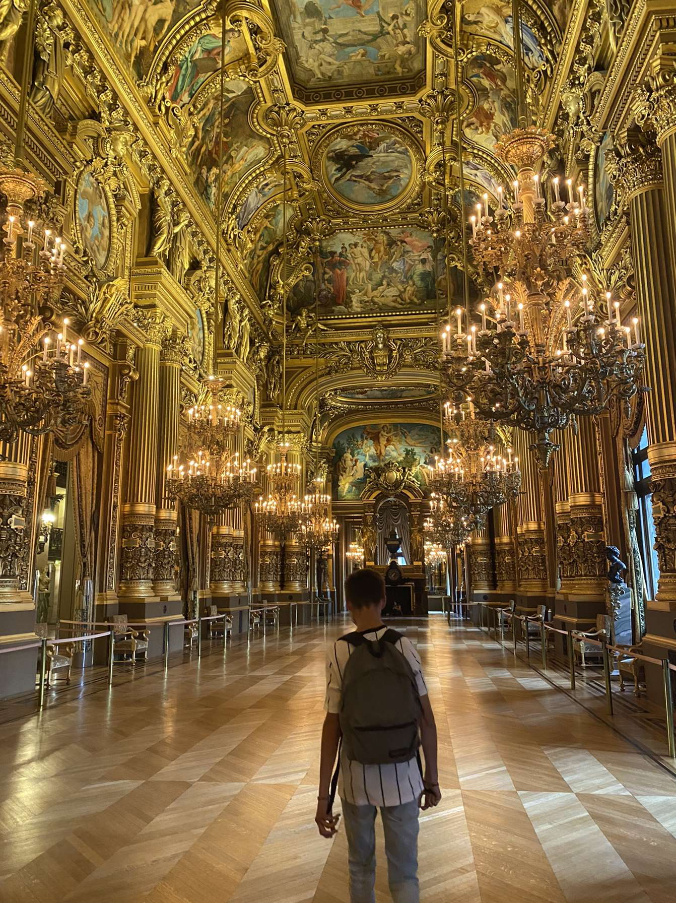
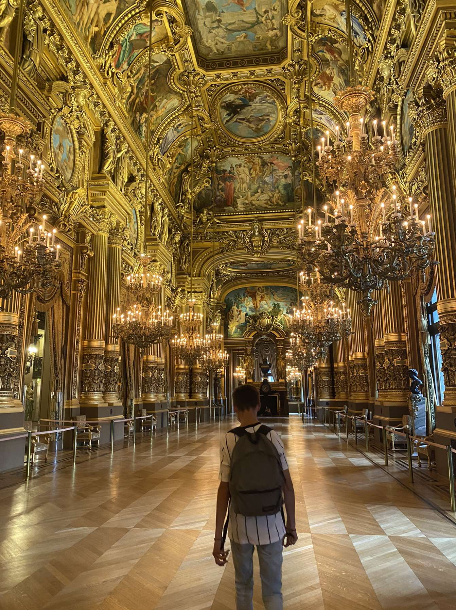
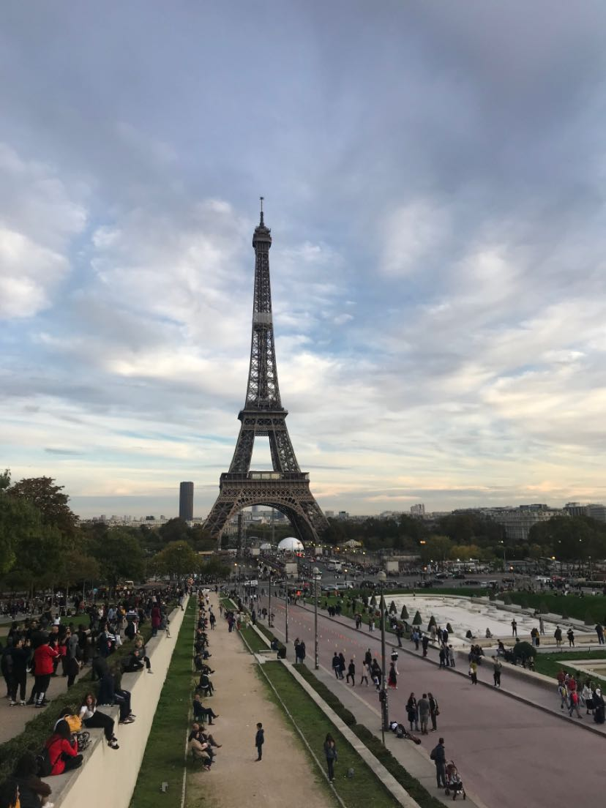
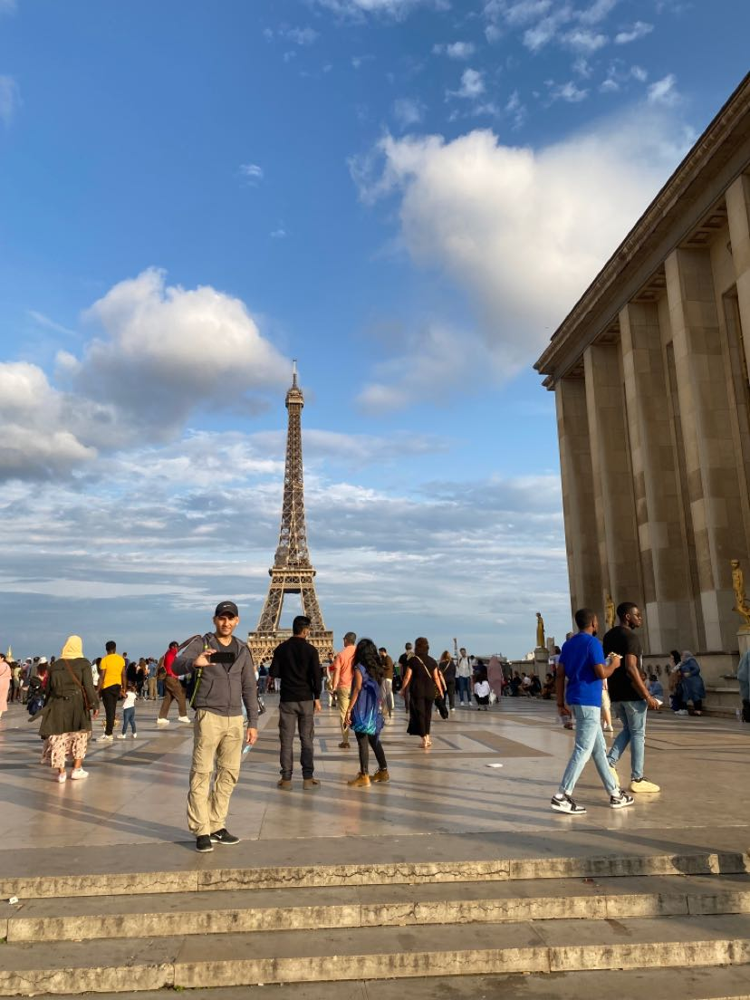

- L'Opéra Garnier -
 

Voici l'Opéra Garnier. Il fut inauguré en 1875 et se situe dans le 9e arrondissement, dans le quartier de l'Opéra.
- Trocadéro -
 Faisant face à la fameuse Tour Eiffel et situé entre le palais de Chaillot, le Trocadéro est une esplanade datant du XIXe siècle.
Me contacter: noelangevin72@gmail.com